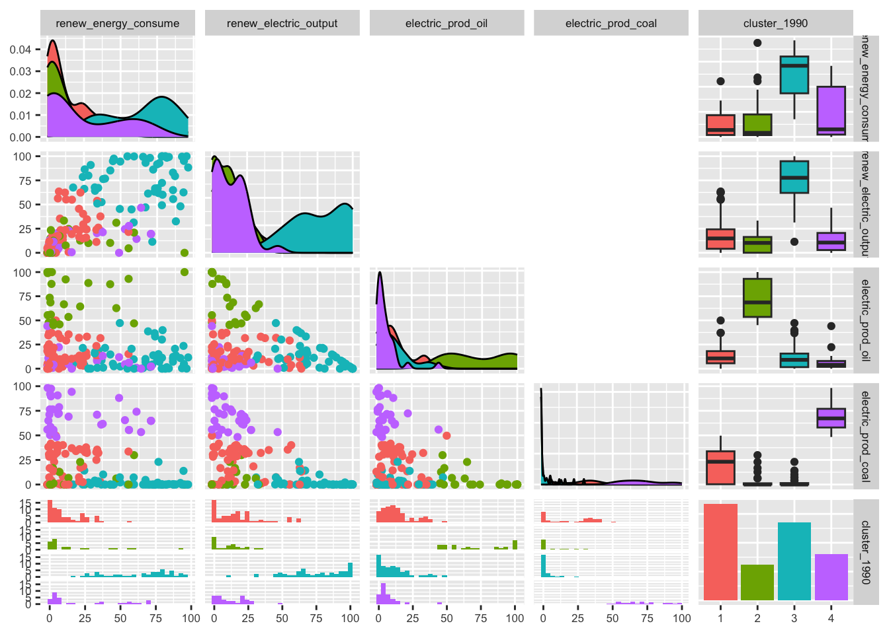
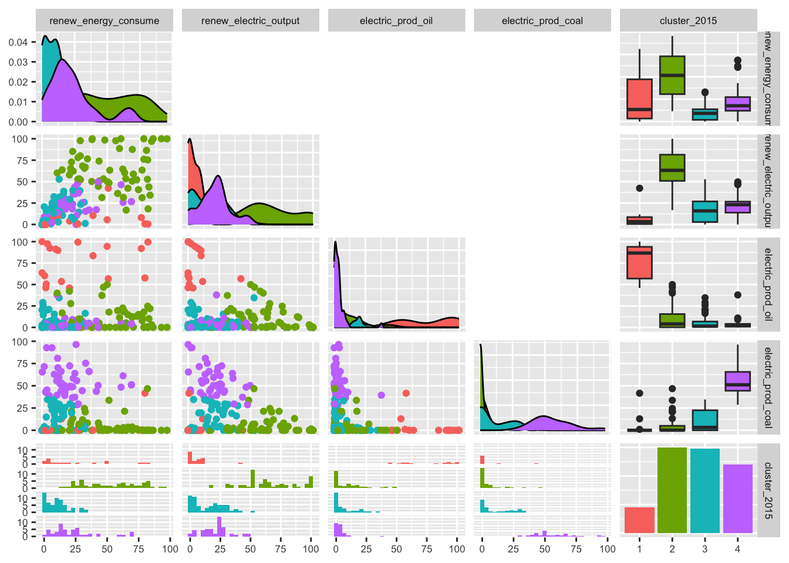
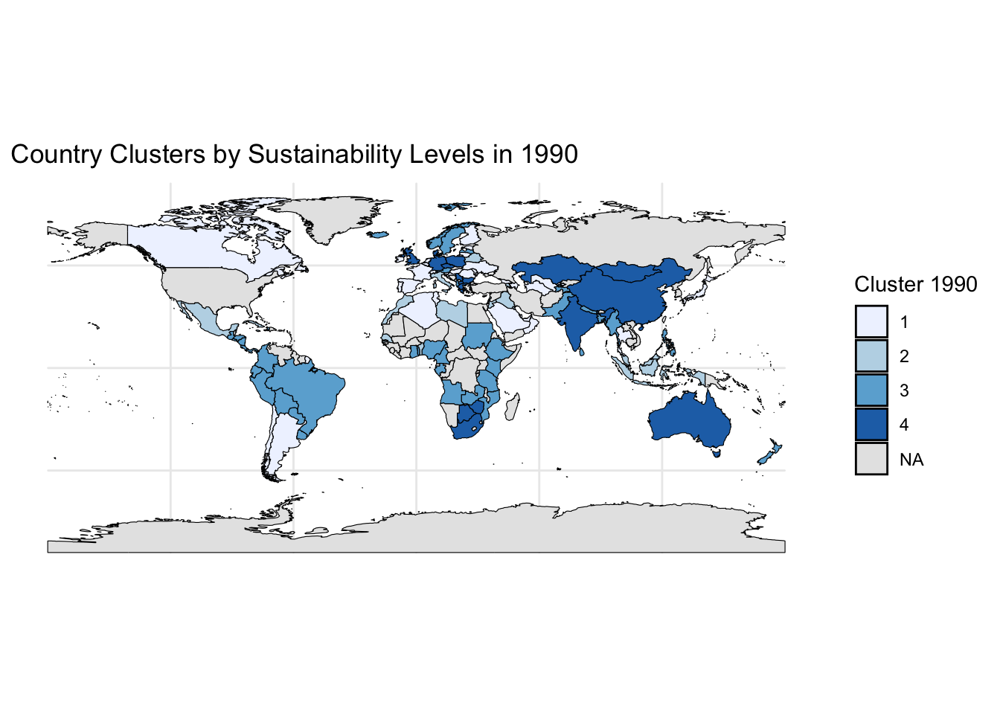
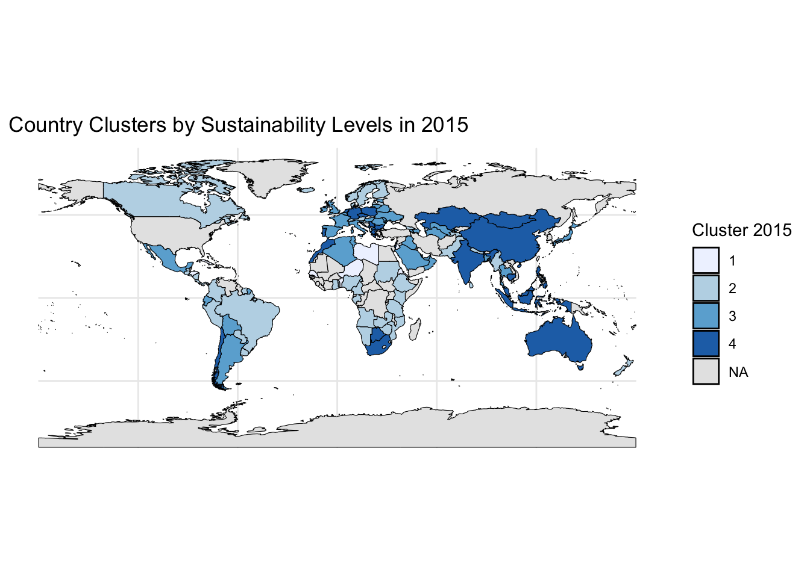

| Country Name | 1990 Cluster | 2015 Cluster |
|---|---|---|
| Africa Eastern and Southern | 4 | 4 |
| Africa Western and Central | 3 | 2 |
| Angola | 3 | 2 |
| Albania | 3 | 2 |
| Arab World | 1 | 3 |
| United Arab Emirates | 1 | 3 |
| Argentina | 1 | 3 |
| Armenia | 2 | 3 |
| Australia | 4 | 4 |
| Austria | 3 | 2 |
| Azerbaijan | 1 | 3 |
| Belgium | 1 | 3 |
| Benin | 2 | 1 |
| Bangladesh | 3 | 3 |
| Bulgaria | 4 | 4 |
| Bahrain | 1 | 3 |
| Bosnia and Herzegovina | 4 | 4 |
| Belarus | 2 | 3 |
| Bolivia | 3 | 3 |
| Brazil | 3 | 2 |
| Brunei Darussalam | 1 | 3 |
| Botswana | 4 | 4 |
| Canada | 1 | 2 |
| Central Europe and the Baltics | 4 | 4 |
| Switzerland | 1 | 2 |
| Chile | 1 | 4 |
| China | 4 | 4 |
| Cote d'Ivoire | 3 | 2 |
| Cameroon | 3 | 2 |
| Congo, Dem. Rep. | 3 | 2 |
| Congo, Rep. | 3 | 2 |
| Colombia | 3 | 2 |
| Costa Rica | 3 | 2 |
| Cuba | 2 | 1 |
| Cyprus | 2 | 1 |
| Czechia | 4 | 4 |
| Germany | 4 | 4 |
| Denmark | 4 | 2 |
| Dominican Republic | 2 | 1 |
| Algeria | 1 | 3 |
| East Asia & Pacific (excluding high income) | 4 | 4 |
| Early-demographic dividend | 1 | 4 |
| East Asia & Pacific | 1 | 4 |
| Europe & Central Asia (excluding high income) | 1 | 3 |
| Europe & Central Asia | 1 | 3 |
| Ecuador | 3 | 3 |
| Egypt, Arab Rep. | 1 | 3 |
| Euro area | 1 | 3 |
| Spain | 1 | 3 |
| Estonia | 1 | 3 |
| Ethiopia | 3 | 2 |
| European Union | 1 | 3 |
| Fragile and conflict affected situations | 1 | 2 |
| Finland | 1 | 2 |
| France | 1 | 3 |
| Gabon | 3 | 2 |
| United Kingdom | 4 | 3 |
| Georgia | 1 | 2 |
| Ghana | 3 | 2 |
| Gibraltar | 2 | 1 |
| Greece | 4 | 4 |
| Guatemala | 3 | 2 |
| High income | 1 | 3 |
| Hong Kong SAR, China | 4 | 4 |
| Honduras | 3 | 1 |
| Heavily indebted poor countries (HIPC) | 3 | 2 |
| Croatia | 1 | 2 |
| Haiti | 3 | 1 |
| Hungary | 1 | 3 |
| IBRD only | 1 | 4 |
| IDA & IBRD total | 1 | 4 |
| IDA total | 3 | 2 |
| IDA blend | 3 | 2 |
| Indonesia | 2 | 4 |
| IDA only | 3 | 2 |
| India | 4 | 4 |
| Ireland | 1 | 3 |
| Iran, Islamic Rep. | 1 | 3 |
| Iraq | 2 | 3 |
| Iceland | 3 | 2 |
| Israel | 1 | 4 |
| Italy | 2 | 3 |
| Jamaica | 2 | 1 |
| Jordan | 2 | 1 |
| Japan | 1 | 3 |
| Kazakhstan | 4 | 4 |
| Kenya | 3 | 2 |
| Kyrgyz Republic | 1 | 2 |
| Korea, Rep. | 1 | 4 |
| Kuwait | 2 | 1 |
| Latin America & Caribbean (excluding high income) | 3 | 2 |
| Lebanon | 2 | 1 |
| Libya | 2 | 1 |
| Latin America & Caribbean | 3 | 2 |
| Least developed countries: UN classification | 3 | 2 |
| Sri Lanka | 3 | 2 |
| Lower middle income | 1 | 4 |
| Low & middle income | 1 | 4 |
| Late-demographic dividend | 1 | 4 |
| Lithuania | 1 | 3 |
| Luxembourg | 4 | 3 |
| Latvia | 3 | 2 |
| Morocco | 2 | 4 |
| Moldova | 1 | 3 |
| Middle East & North Africa | 1 | 3 |
| Mexico | 2 | 3 |
| Middle income | 1 | 4 |
| North Macedonia | 4 | 4 |
| Malta | 4 | 1 |
| Myanmar | 3 | 2 |
| Middle East & North Africa (excluding high income) | 2 | 3 |
| Mongolia | 4 | 4 |
| Mozambique | 3 | 2 |
| Mauritius | 2 | 4 |
| Malaysia | 2 | 4 |
| North America | 4 | 3 |
| Nigeria | 3 | 2 |
| Nicaragua | 3 | 2 |
| Netherlands | 1 | 4 |
| Norway | 3 | 2 |
| Nepal | 3 | 2 |
| New Zealand | 3 | 2 |
| OECD members | 1 | 3 |
| Oman | 1 | 3 |
| Other small states | 1 | 3 |
| Pakistan | 3 | 2 |
| Panama | 3 | 2 |
| Peru | 3 | 2 |
| Philippines | 3 | 4 |
| Poland | 4 | 4 |
| Pre-demographic dividend | 3 | 2 |
| Korea, Dem. People's Rep. | 1 | 2 |
| Portugal | 1 | 4 |
| Paraguay | 3 | 2 |
| Post-demographic dividend | 1 | 3 |
| Qatar | 1 | 3 |
| Romania | 1 | 3 |
| Russian Federation | 1 | 3 |
| South Asia | 4 | 4 |
| Saudi Arabia | 1 | 3 |
| Sudan | 3 | 2 |
| Senegal | 2 | 1 |
| Singapore | 2 | 3 |
| El Salvador | 3 | 2 |
| Serbia | 4 | 4 |
| Sub-Saharan Africa (excluding high income) | 4 | 4 |
| Sub-Saharan Africa | 4 | 4 |
| Small states | 1 | 3 |
| Slovak Republic | 1 | 3 |
| Slovenia | 1 | 3 |
| Sweden | 3 | 2 |
| Syrian Arab Republic | 2 | 3 |
| East Asia & Pacific (IDA & IBRD countries) | 4 | 4 |
| Europe & Central Asia (IDA & IBRD countries) | 1 | 3 |
| Togo | 3 | 2 |
| Thailand | 1 | 3 |
| Tajikistan | 3 | 2 |
| Turkmenistan | 1 | 3 |
| Latin America & the Caribbean (IDA & IBRD countries) | 3 | 2 |
| Middle East & North Africa (IDA & IBRD countries) | 2 | 3 |
| South Asia (IDA & IBRD) | 4 | 4 |
| Sub-Saharan Africa (IDA & IBRD countries) | 4 | 4 |
| Trinidad and Tobago | 1 | 3 |
| Tunisia | 1 | 3 |
| Turkiye | 1 | 3 |
| Tanzania | 3 | 2 |
| Ukraine | 1 | 3 |
| Upper middle income | 1 | 4 |
| Uruguay | 3 | 2 |
| United States | 4 | 3 |
| Uzbekistan | 1 | 3 |
| Venezuela, RB | 1 | 2 |
| Viet Nam | 3 | 4 |
| World | 1 | 4 |
| Yemen, Rep. | 2 | 1 |
| South Africa | 4 | 4 |
| Zambia | 3 | 2 |
| Zimbabwe | 4 | 2 |
Analyzing Sustainability Indicators Amidst Climate Change
Clustering by sustainability levels
We clustered the data between 1990 and 2015 to determine country’s sustainability by 4 clusters and using the following variables:
-Renewable energy consumption (% of total final energy consumption)
-Renewable electricity output (% of total electricity output)
-Electricity production from oil sources (% of total)
-Electricity production from coal sources (% of total)
(See appendix to see why we’ve chose k=4 for clustering).
After the process of standardizing indicators and k-means clustering for the years 1990 and 2015 was complete, the table we created allowed us to take a glimpse at the changes in cluster group assignments for the first 10 countries and regions in this newly formed dataset. At first glance, you can see the region of ‘Africa Eastern and Southern’ changed groups from 3 to 4, while the country of Argentina moved from 4 to 3.
Next, the goal was to visualize the distribution of values for each cluster group in order to distinguish each group’s unique characteristics using a scatterplot matrix. There are two matrices to represent the cluster groups for two different periods. By knowing each cluster’s special characteristics, we are able to identify which groups are most sustainable and the least sustainable.


In 1990:
- Cluster 1 (red)
- Characterized by high oil-based electricity production, but very low renewable energy consumption and renewable electricity output.
- Least sustainable: It likely represents countries heavily reliant on fossil fuels with minimal use of renewables.
- Characterized by high oil-based electricity production, but very low renewable energy consumption and renewable electricity output.
- Cluster 2 (green)
- Higher levels of renewable energy consumption and electricity output, with low oil and coal electricity production.
- Most sustainable: Likely represents countries investing in renewables with limited reliance on fossil fuels.
- Higher levels of renewable energy consumption and electricity output, with low oil and coal electricity production.
- Cluster 3 (blue)
- Relatively high coal-based electricity production, with moderate renewable energy consumption.
- Second most sustainable: Notably high coal usage, but more renewables than Cluster 1.
- Relatively high coal-based electricity production, with moderate renewable energy consumption.
- Cluster 4 (purple)
- Low to moderate values across all four indicators. Moderate coal usage but low in renewable energy usage.
- Third most sustainable: Not a standout in fossil fuel or renewable use.
- Low to moderate values across all four indicators. Moderate coal usage but low in renewable energy usage.
Ranking from most to least sustainable: 2, 3, 4, 1
In 2015:
- Cluster 1 (red)
- Remains the least sustainable, although with some improvement in renewable energy consumption.
- Cluster 2 (green)
- Remains the most sustainable. Clear leader in sustainability metrics.
- Cluster 3 (blue)
- Reduced reliance on coal production, slight increase in renewables.
- Still in second place in sustainability ranking.
- Reduced reliance on coal production, slight increase in renewables.
- Cluster 4 (purple)
- Increased coal production, surpassing Cluster 3. Moderate renewable energy, low oil usage.
- Still in third place in sustainability ranking.
- Increased coal production, surpassing Cluster 3. Moderate renewable energy, low oil usage.
Sustainability cluster map


The elbow plots below were used to determine the optimal number of cluster groups (k) for countries based on their sustainability levels. Not all seven sustainability indicators were considered in the k-means clustering model because the goal was to prioritize the sustainability indicators that signal robust economic activity and is thus prone to annual fluctuations, such as renewable energy consumption, renewable electricity output, as well as electricity production from oil and coal sources. We determined that 4 cluster groups was the optimal amount to proceed with our analysis.